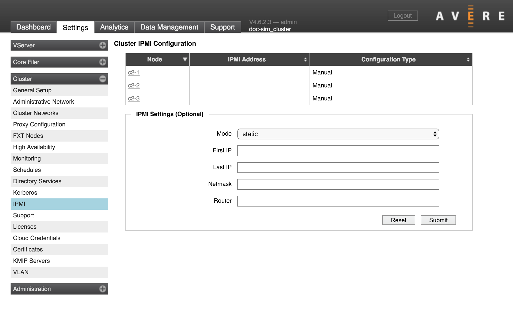

Cluster > IPMI
This page lets you configure how IP addresses are assigned to the Intelligent Platform Management Interface (IPMI) cards in the cluster nodes. IPMI is used for remote access to a node, and can be used to troubleshoot malfunctioning FXT nodes.
Avere Systems recommends configuring IPMI on all cluster nodes so that they can be accessed in the event of a node failure.
This page defines the cluster-wide IPMI configuration, which is automatically applied to all existing cluster nodes as soon as the configuration is saved. When a new node joins the cluster, it automatically takes on these IPMI settings.
Choose from the following options:
- No IPMI Configuration
- Does not change the IPMI setting. IPMI cards typically are configured to use DHCP when shipped from Avere. If choosing this setting, make sure that the card still has a valid configuration - if an IPMI card does not have an IP address it cannot be used for system recovery.
- Static
Assign static addresses to the IPMI cards in the cluster. When choosing this option, you must specify the following:
- IP address range - specify a contiguous address range by entering the first and last IP address in the range.
- Netmask
- Router address (in dot notation)
- DHCP
- Use DHCP to assign the IPMI card’s address.
The top of the page lists the nodes in the cluster. Clicking on a node name loads the Node Details page, which includes options for setting a custom IPMI configuration for an individual node. Read Custom IPMI Configuration to learn more.